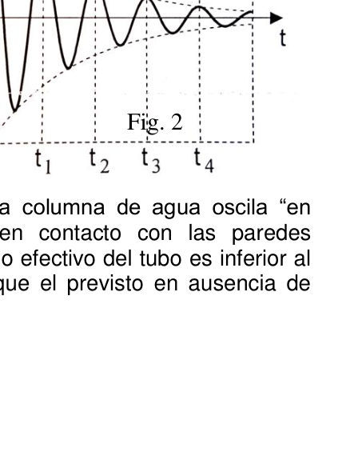

PE43. Escuela de Educación Técnica Alberto Einstein - Colegio San Alfonso
Colegio Divina Misericordia - Colegio Del Milagro
Instituto Timoteo - Instituto de Educación Media Dr. Arturo Oñativia
Colegio Belgrano - Colegio Juan Manuel Estrada
Colegio Sagrada Familia - Uzzi Colage
Colegio Juana Manuela Gorriti - Colegio Santa María
Bachillerato Humanista Moderno - Colegio Santa Teresa
Instituto Santa María - Instituto Güemes
Colegio 11 de Septiembre
Ciudad de Salta.
Oscilaciones amortiguadas de un péndulo de agua.
Marco Teórico
En equilibrio, el nivel de agua en los dos lados del
tubo es el mismo (Figura 1-a). Cuando se sopla por
un extremo del tubo el sistema se desequilibra
(Figura 1- b) y al liberar el sistema, el nivel x del agua
oscila en torno al equilibrio. No es difícil demostrar
que, en ausencia de fricción, esta oscilación es
armónica, es decir:
X= A.cos wo.t (1)
Con periodo de oscilación T0 =2π/wo dado por:
To 2 = 2𝜋 𝑔𝑅2 𝑉 (2)
Donde g es la aceleración de la gravedad, R radio del tubo y V el volumen de agua.
En ausencia de fricción, la amplitud de oscilación, A sería constante en el tiempo. Un tratamiento más realista debe tener en cuenta la fricción del agua con las paredes del tubo. Si se considera una fuerza de fricción proporcional a la velocidad del agua se obtiene: X= Ao𝑒−𝛾𝑡𝑐𝑜𝑠𝑤𝑡 (3) Fig. 1-a Fig. 1-b
162 - OAF 2016 Donde γ es el llamado coeficiente de amortiguamiento, el resultado (3) representa una oscilación armónica con frecuencia angular w=2π/T y amplitud A exponencialmente decreciente (Figura 2).
A= A0𝑒−𝛾𝑡 (4)
Si el amortiguamiento es débil (γ˂˂wo), como se nuestro caso, la frecuencia w coincide aproximadamente con la frecuencia wo en ausencia de amortiguamiento, de forma que la expresión (2) para el período de oscilación sigue siendo aproximadamente válida. Pero. Debido a la fricción del agua con las paredes, la columna de agua oscila ―en bloque‖ es decir como un todo (la capa de agua en contacto con las paredes prácticamente no se mueve). Como consecuencia, el radio efectivo del tubo es inferior al real, y por lo tanto el período de oscilación es mayor que el previsto en ausencia de fricción, de forma que:
T2= 2𝜋 𝑔.𝑅𝑒𝑓2V (5)
Con Ref ˂ R y T ˃T0
En la prueba experimental se medirá se realizarán una serie de medidas para determinar los radios efectivos, Ref y real R del tubo. En nuestros montajes estos radios son claramente diferentes, es decir la diferencia entre ambos es mayor que sus incertidumbres experimentales.
Objetivos
Se van a estudiar experimentalmente las oscilaciones de la columna de agua contenida
en un tubo cilíndrico, doblado en forma de U. Debido a la fricción del agua con las
paredes del tubo, esta oscilación es amortiguada y al cabo de unas pocas oscilaciones se
alcanza el equilibrio.
Interesa calcular el radio efectivo del tubo.
Determinación del Ref y el Radio R.
1- Mediante una jeringa graduada añada agua dentro del tubo de forma que el volumen de agua sea sucesivamente V= 30, 40, 50, …, 100 cm3. En cada uno de estos casos: Mida con el cronómetro el período de oscilación del agua en torno a su nivel de equilibrio. Sugerencia mida cuatro veces el tiempo de cuatro oscilaciones completas (4T1, 4T2, 4T3 y 4 T4) y deduzca el período promedio T. Presente sus medidas y resultados en la siguiente tabla.
V(cm3) 4T1(s) 4T2(s) 4T3(s) 4T4(s) T(s) T2(s2) L(cm) R(mm) 30
40
50
60
70
80
90
100
Fig. 2
OAF 2016 - 163 Para cada V marque con una fibra en los dos lados del tubo la posición del nivel de agua en equilibrio. La distancia entre estas dos marcas, que se medirá más tarde cuando se vacíe y estire el tubo, permitirá determinar su radio R. Tenga cuidado que estas marcas no se borren.
2- Represente gráficamente en un papel milimetrado los puntos experimentales T2 (en ordenadas) frente a V (abscisas).
3- Obtenga la pendiente de la recta que mejor ajuste a los puntos.
4- Deduzca el valor del radio efectivo del tubo Ref.
5- Haga una estimación de la incertidumbre (margen de error) del radio efectivo ∆Ref.
6- Desmonte con cuidado un lado del tubo y vacíe el agua en un vaso. Desmonte completamente el tubo y estírelo sobre la mesa, mida la distancia L entre las marcas simétricas que ha hecho para cada V y deduzca en cada caso el radio R del tubo. Anote los valores L y R en las columnas correspondientes de la tabla.
7- Calcule el valor medio de R y haga una estimación de su incertidumbre.

Topic: Oscillations & Waves Metodi: Experimental Data Analysis, Simple Harmonic Motion Analysis Competenze: Physical Reasoning, Experimental Data Analysis Objects: Pendulum Fonte: Testo (PDF) — p.3
PE43. Scuola di istruzione tecnica Alberto Einstein - Colegio San Alfonso
La Divina Misericordia - La Scuola del Miracolo
Istituto Timoteo - Istituto di Educazione Medica Dr. Arturo Oñativia
Colegio Belgrano - Colegio Juan Manuel Estrada
Scuola Sagrada Familia - Uzzi Colage
Scuola Juana Manuela Gorriti - Scuola Santa Maria
Laurea di Humanità Moderna - Colegio Santa Teresa
Istituto Santa Maria - Istituto Güemes
La scuola dell’11 settembre
Città di Salta.
Oscillazioni amortizzate di un pendolo d’acqua. Marco Teorico In equilibrio, il livello dell’acqua su entrambi i lati del Il tubo è lo stesso (Figura 1-a). Quando si soffia per Un’estremità del tubo il sistema si sbilanci (Figura 1-b) e quando si libera il sistema, il livello x dell’acqua oscilla intorno all’equilibrio. Non è difficile dimostrare. che, in assenza di attrito, questa oscillazione è armonica, cioè: X = A.cos wo.t (1)
Con periodo di oscillazione T0 =2π/wo dato da:
To 2 = 2𝜋 𝑔𝑅2 𝑉 (2)
Dove g è l’accelerazione della gravità, R il raggio del tubo e V il volume dell’acqua.
In assenza di attrito, l’ampiezza di oscillazione, A sarebbe costante nel tempo. Un Il trattamento più realistico deve tenere conto della friczione dell’acqua con i muri del tubo. Se si considera una forza di attrito proporzionale alla velocità dell’acqua si ottiene: X= Aoe−γtcoswt (3) Fig. 1-a Fig. 1-b
162 - OAF 2016 Dove? γ es el chiamato Coefficiente de l’importo di questo debito è di circa un’ oscillazione armonica a frequenza angolare w=2π/T y Ampiezza A Esponentialmente La crescita è in calo (Figura 2).
A= A0𝑒−𝛾𝑡 (4)
Se l’ammortizzazione è debole (γwo), come si il nostro caso, la Frequenza w coincide . circa con la frequenza wo in l’assenza di amortizzazione, in modo che la espressione (2) per il periodo di oscillazione è ancora approssimativamente valida. Ma… A causa del friczione dell’acqua con i muri, la colonna d’acqua oscilla Blocco, cioè tutto (la piattaforma d’acqua in contatto con i muri) praticamente non si muove). Di conseguenza, il raggio effettivo del tubo è inferiore a La durata di oscillazione è quindi maggiore di quella prevista in assenza di la friczione, in modo che:
T2= 2𝜋 g.Ref2V (5)
Con Ref R e T T0
La prova sperimentale sarà misurata e si terranno una serie di misure per determinare i raggi effettivi, Ref e reale R del tubo. Nei nostri montamenti questi radio sono chiaramente diversi, cioè la differenza tra i due è maggiore di quella tra i due. l’incertezza sperimentale.
Obiettivi Si studieranno sperimentalmente le oscillazioni della colonna d’acqua contenuta. in un tubo cilindrico, piegato in U. A causa della friczione dell’acqua con le Le pareti del tubo, questa oscillazione è ammortizzata e dopo qualche oscillazione si raggiunge il suo equilibrio. Interessa calcolare il raggio effettivo del tubo. Determinazione del Rif e della Radio R.
1- Aggiungere acqua all’interno del tubo mediante una siringa graduata in modo che il il volume d’acqua è successivo V= 30, 40, 50, …, 100 cm3. In ogni caso, Questi casi: Misura con il cronometro il periodo di oscillazione dell’acqua intorno a il suo livello di equilibrio. Suggerimento misurato quattro volte il tempo di quattro I valori di variazione di variazione di variazione di variazione di variazione di variazione di variazione di variazione di variazione di variazione di variazione di variazione di variazione di variazione di variazione di variazione di variazione di variazione di variazione di variazione di variazione di variazione di variazione di variazione di variazione di variazione di variazione di variazione di variazione di variazione di variazione di variazione di variazione di variazione di variazione di variazione di variazione di variazione di variazione di variazione di variazione di variazione di variazione di variazione di variazione di variazione di variazione di variazione di variazione di variazione di variazione di variazione di variazione di variazione di variazione di variazione di variazione di variazione di variazione di variazione di variazione di variazione di variazione di variazione di variazione di variazione di variazione di variazione di variazione di variazione di variazione di variazione di variazione di variazione di variazione di variazione di variazione di variazione di variazione di variazione di variazione di variazione di variazione di variazione di variazione di variazione di variazione di variazione di variazione di variazione di variazione di variazione di variazione di variazione di variazione di variazione di variazione di variazione di variazione di variazione di variazione di variazione di variazione di variazione di variazione di variazione di variazione di variazione di variazione di variazione di variazione di variazione di variazione di variazione di variazione di variazione di variazione di variazione di variazione di variazione di variazione di variazione di variazione di variazione di variazione di variazione di variazione di variazione di variazione di variazione di variazione di variazione di variazione di variazione di variazione di variazione di variazione di variazione di variazione di variazione di variazione di variazione di variazione di variazione di variazione di variazione di variazione di variazione di di di di di di di di di di di di di di di di di di di di di di di di di di di di di di di di di di di di di di di di di di di di di di di di di di di di di di di di di di di di di di di di di Presenta le tue misure e risultati nella tabella seguente.
V(cm3) 4T1(s) 4T2(s) 4T3(s) 4T4(s) T(s) T2(s2) L(cm) R(mm) 30
40
50
60
70
80
90
100
Fig. 2
OAF 2016 - 163 Per ogni V, segna con una fibra su entrambi i lati del tubo la posizione del livello dell’acqua in equilibrio. La distanza tra questi due segni, che sarà misurata più tardi quando si Vaga e estende il tubo, permettendo di determinare il suo raggio R. Attenzione, questi segni. non si cancella.
2- Rappresenta graficamente su carta millimetrica i punti sperimentali T2 (in ordine) rispetto a V (abcisse).
3- Ottieni l’inclinazione della retta che meglio si adatta ai punti.
4- Detrazione del valore del raggio effettivo del tubo Ref.
5- Fa’ una stima dell’incertezza (margine di errore) della radio effettiva
- Riferimento.
6- Scacciate con cura un lato del tubo e svuotate l’acqua in un bicchiere. Sdistruggere Completamente il tubo e stendilo sul tavolo, misurare la distanza L tra le segni simmetrici che ha fatto per ogni V e dedurre in ogni caso il radio R
- Il tubo. Nota i valori L e R nelle corrispondenti colonne della tabella.
7- Calcolare il valore medio di R e fare una stima dell’incertezza.
Topic: Oscillations & Waves Metodi: Experimental Data Analysis, Simple Harmonic Motion Analysis Competenze: Physical Reasoning, Experimental Data Analysis Objects: Pendulum Fonte: Testo (PDF) — p.3
PE43. Albert Einstein Technical Education School - College of San Alfonso
Divine Mercy College - College of the Miracle
Timothy Institute - Institute of Middle Education Dr. Arturo Oñativia is a great writer.
Belgrano College - Juan Manuel Estrada School
The school is called the “Sacred Family School”
School Juana Manuela Gorriti - School of Santa Maria
Modern Humanist Bachelor’s degree - College of Saint Teresa
The Spanish Ministry of Foreign Affairs
The 11th of September School .
Salt City.
Damping oscillations from a water pendulum. Theoretical Mark In balance, the water level on both sides of the The tube is the same (Figure 1-a). When you blow for it One end of the tube the system becomes unbalanced (Figure 1-b) and when the system is released, the water level x It oscillates around the balance. It ‘s not hard to prove . That, in the absence of friction, this oscillation is Harmonic, that is to say: X = A.cos wo.t (1)
With oscillation period T0 =2π/wo given by:
To 2 = 2𝜋 𝑔𝑅2 𝑉 (2)
Where g is the acceleration of gravity, R is the radius of the tube and V is the volume of water.
In the absence of friction, the oscillation amplitude, A would be constant over time. Un The most realistic treatment should take into account the friction of water with the walls of the building. pipe. If a force of friction is considered to be proportional to the speed of the water, it is It gets: X = Aoe−γtcoswt (3) Fig. 1-a Fig. 1-b
The Commission shall adopt delegated acts in accordance with Article 16 of this Regulation. Where ? γ es el called Coefficient de The result of the calculation of the net loss of the net loss of the net loss of the net loss of the net loss of the net loss of the net loss of the net loss of the net loss of net loss of net loss of net loss of net loss of net loss of net loss of net loss of net loss of net loss of net loss of net loss of net loss of net loss of net loss of net loss of net loss of net loss of net loss of net loss of net loss of net loss of net loss of net loss of net loss of net loss of net loss of net loss of net loss of net loss of net loss of net loss of net loss of net loss of net loss of net loss of net loss of net loss of net loss of net loss of net loss of net loss of net loss of net loss of net loss of net loss of net loss of net loss of net loss of net loss of net loss of net loss of net loss of net loss of net loss of net loss of net loss of net loss of net loss of net loss of net loss of net loss of net loss of net loss of net loss of net loss of net loss of net loss of net loss of net loss of net loss of net loss of net loss of net loss of net loss of net loss of net loss of net loss of net loss of net loss of net net net net loss of net net loss of net net net loss of net net net net net net a harmonic oscillation with angular frequency w=2π/T y width A exponentially The number of people in the EU is decreasing (Figure 2).
A= A0𝑒−𝛾𝑡 (4)
If the buffer is weak (γwo), how are you Our . case, la Frequency w It ‘s a match . approximately with frequency wo in The following is the list of the types of loans that are available to the Expression (2) for the period of oscillation It’s still roughly valid. But, you know, Because of the friction of water with the walls, the water column oscillates. Block‖ is to say as a whole (the water layer in contact with the walls It’s practically not moving. As a consequence, the effective radius of the tube is less than The actual period of oscillation is therefore longer than expected in the absence of friction, so that:
T2= 2𝜋 The following is the list of the following:
With Ref R and T T0
The experimental test will be measured and a series of measures will be taken to determine the effective radii, Ref and real R of the tube. In our assemblies these radios are Clearly different, meaning the difference between the two is greater than theirs The Commission has already taken a number of measures to address the problem of the use of the ‘experimental uncertainties’.
Objectives The oscillations of the water column contained in the water column will be studied experimentally. in a cylindrical tube, folded in the shape of a U. Because of the friction of the water with the walls of the tube, this oscillation is cushioned and after a few oscillations it is It’s a balance. It is interesting to calculate the effective radius of the tube. Determination of Ref and Radio R.
1- By means of a graduated syringe, add water to the tube so that the The water volume is V= 30, 40, 50, …, 100 cm3. In each of These cases: Measure with the chronometer the period of water oscillation around your level of balance. Suggestion measured four times the time of four. The total value of the input data shall be the sum of the values of the input data. Present your measurements and results in the following table.
V(cm3) 4T1(s) 4T2(s) 4T3(s) 4T4(s) T(s) T2(s2) L(cm) R(mm) 30
40
50
60
70
80
90
100
Fig. 2
The Commission shall adopt delegated acts in accordance with Article 21 of this Regulation. For each V mark with a fiber on both sides of the tube the water level position In balance. The distance between these two marks, which will be measured later when you Empty and stretch the tube, allowing its R radius to be determined. Be careful with these marks . They don’t get erased.
2- Graphically represent the T2 experimental points on a millimeter paper (in order) versus V (abscises).
3- Get the slope of the straight line that best fits the points.
4- Subtract the value of the effective radius of the Ref tube.
5- Estimate the uncertainty (margin of error) of the effective radius ∆Ref.
6- Carefully disassemble one side of the tube and empty the water in a glass. Dismantle it . completely the tube and stretch it over the table, measure the distance L between the two symmetrical marks you have made for each V and deduces in each case the radius R the tube. Write down the values L and R in the corresponding columns of the table.
7- Calculate the mean value of R and estimate its uncertainty.
Topic: Oscillations & Waves Metodi: Experimental Data Analysis, Simple Harmonic Motion Analysis Competenze: Physical Reasoning, Experimental Data Analysis Objects: Pendulum Fonte: Testo (PDF) — p.3